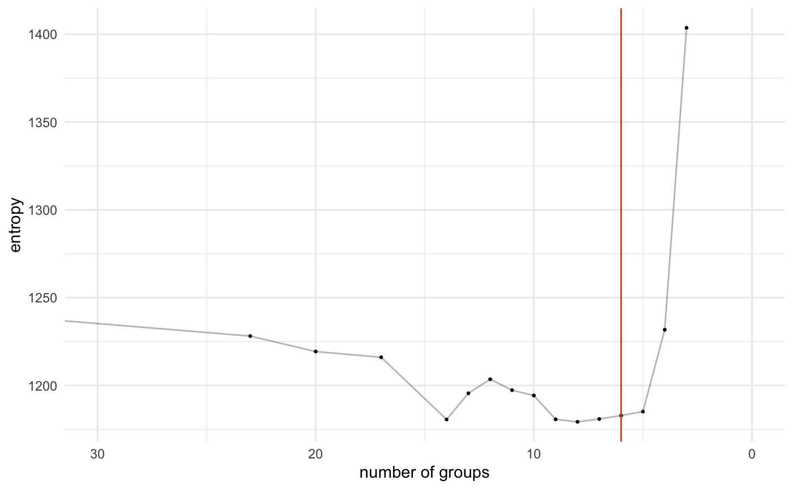
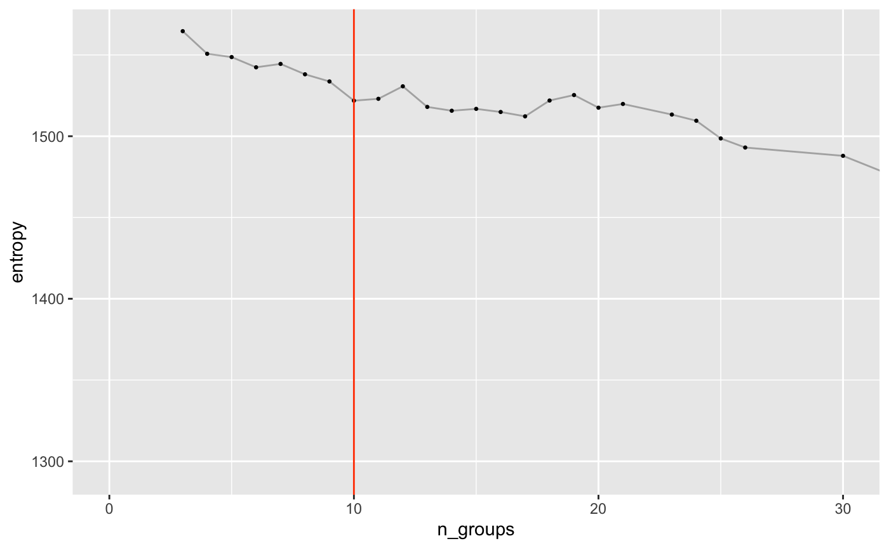
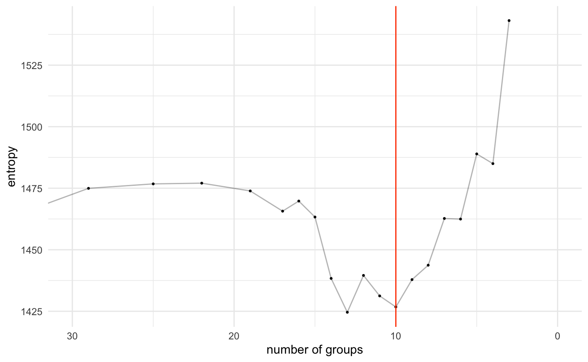
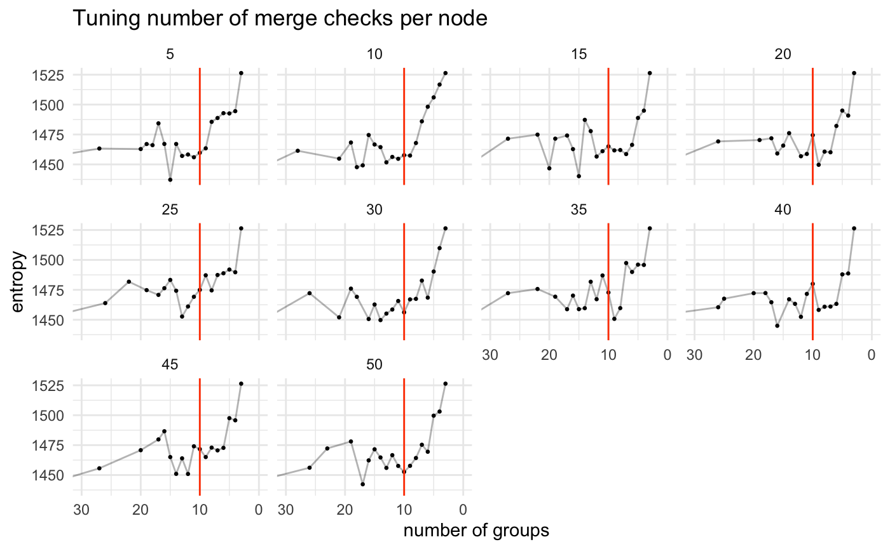
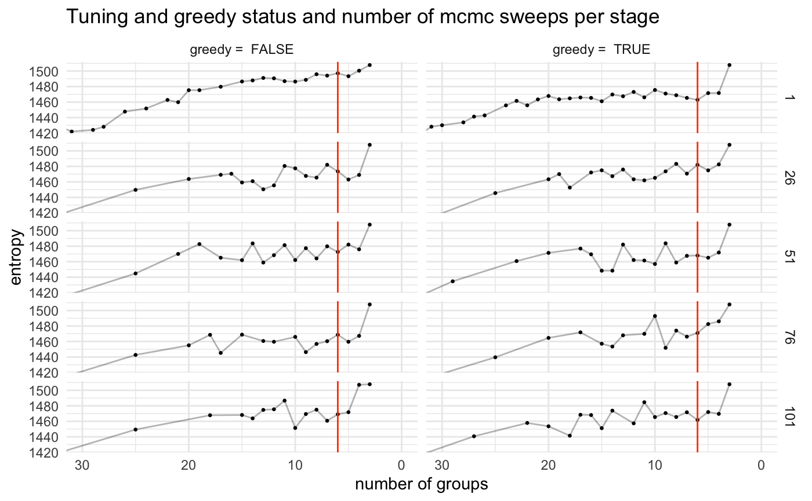

Agglomerative Merging
agglomerative_merging.RmdOne technique of finding the optimal number of clusters/ best partitioning is using the efficient agglomerative merging algorithm. This is typically used to find the initial state for MCMC chains but can stand on its own as a clustering method.
Agglomerative merging can be acomplished with the SBM class using the method collapse_groups().
First we will setup a model using a simulated bipartite network dataset. The true number of groups in this dataset is 6.
library(bisbmsim)
library(sbmR)
library(tidyverse)
#> ── Attaching packages ────────────────────────────────────────────────────────────────────────────── tidyverse 1.3.0 ──
#> ✔ ggplot2 3.2.1 ✔ purrr 0.3.3
#> ✔ tibble 2.1.3 ✔ dplyr 0.8.3
#> ✔ tidyr 1.0.0 ✔ stringr 1.4.0
#> ✔ readr 1.3.1 ✔ forcats 0.4.0
#> ── Conflicts ───────────────────────────────────────────────────────────────────────────────── tidyverse_conflicts() ──
#> ✖ dplyr::filter() masks stats::filter()
#> ✖ dplyr::lag() masks stats::lag()N_a <- 50 # Number of nodes of the a type
N_b <- 50 # Number of nodes of the b type
K_a <- 3 # How many blocks of a type nodes are there
K_b <- 3 # How many blocks of the b type nodes are there
b_a <- assign_group_membership(N = N_a, K = K_a) # Block membership for each a node
b_b <- assign_group_membership(N = N_b, K = K_b) # Block membership for each b node
edges <- draw_from_model(
b_a, b_b,
Lambda = generate_random_lambda(K_a = K_a, K_b = K_b)
) %>%
filter(num_edges > 0) %>%
select(a, b) %>%
transmute(
from = paste0('a',a),
to = paste0('b', b)
)
nodes <- dplyr::bind_rows(
tibble(
id = unique(edges$from),
type = "a"
),
tibble(
id = unique(edges$to),
type = "b"
)
)
# Setup SBM model
my_sbm <- create_sbm(edges, nodes)
my_sbm %>% show() %>% head()
#> id parent type level
#> 1 a1 none a 0
#> 2 a10 none a 0
#> 3 a11 none a 0
#> 4 a12 none a 0
#> 5 a13 none a 0
#> 6 a14 none a 0
#> 7 a15 none a 0
#> 8 a16 none a 0
#> 9 a17 none a 0
#> 10 a18 none a 0
#> 11 a19 none a 0
#> 12 a2 none a 0
#> 13 a20 none a 0
#> 14 a21 none a 0
#> 15 a22 none a 0
#> 16 a23 none a 0
#> 17 a24 none a 0
#> 18 a25 none a 0
#> 19 a26 none a 0
#> 20 a27 none a 0
#> 21 a28 none a 0
#> 22 a29 none a 0
#> 23 a3 none a 0
#> 24 a30 none a 0
#> 25 a31 none a 0
#> 26 a32 none a 0
#> 27 a33 none a 0
#> 28 a34 none a 0
#> 29 a35 none a 0
#> 30 a36 none a 0
#> 31 a37 none a 0
#> 32 a38 none a 0
#> 33 a39 none a 0
#> 34 a4 none a 0
#> 35 a40 none a 0
#> 36 a41 none a 0
#> 37 a42 none a 0
#> 38 a43 none a 0
#> 39 a44 none a 0
#> 40 a45 none a 0
#> 41 a46 none a 0
#> 42 a47 none a 0
#> 43 a48 none a 0
#> 44 a49 none a 0
#> 45 a5 none a 0
#> 46 a50 none a 0
#> 47 a6 none a 0
#> 48 a7 none a 0
#> 49 a8 none a 0
#> 50 a9 none a 0
#> 51 b1 none b 0
#> 52 b10 none b 0
#> 53 b11 none b 0
#> 54 b12 none b 0
#> 55 b13 none b 0
#> 56 b14 none b 0
#> 57 b15 none b 0
#> 58 b16 none b 0
#> 59 b17 none b 0
#> 60 b18 none b 0
#> 61 b19 none b 0
#> 62 b2 none b 0
#> 63 b20 none b 0
#> 64 b21 none b 0
#> 65 b22 none b 0
#> 66 b23 none b 0
#> 67 b24 none b 0
#> 68 b25 none b 0
#> 69 b26 none b 0
#> 70 b27 none b 0
#> 71 b28 none b 0
#> 72 b29 none b 0
#> 73 b3 none b 0
#> 74 b30 none b 0
#> 75 b31 none b 0
#> 76 b32 none b 0
#> 77 b33 none b 0
#> 78 b34 none b 0
#> 79 b35 none b 0
#> 80 b36 none b 0
#> 81 b37 none b 0
#> 82 b38 none b 0
#> 83 b39 none b 0
#> 84 b4 none b 0
#> 85 b40 none b 0
#> 86 b41 none b 0
#> 87 b42 none b 0
#> 88 b43 none b 0
#> 89 b44 none b 0
#> 90 b45 none b 0
#> 91 b46 none b 0
#> 92 b47 none b 0
#> 93 b48 none b 0
#> 94 b49 none b 0
#> 95 b5 none b 0
#> 96 b50 none b 0
#> 97 b6 none b 0
#> 98 b7 none b 0
#> 99 b8 none b 0
#> 100 b9 none b 0
#> NULLBasic merging
Now that we have our model setup there are two parameters that control this merging.
First we have GREEDY. When this is set to TRUE, the at every merge step the model will check every possible merge for each node and select the best one.
Second is N_CHECKS_PER_GROUP. When GREEDY is set to FALSE, this parameter controls how many possible merges the model explores for each node before choosing the best one. Higher means a longer run time. Note that these potential merges are done by a random sample of neighbor groups so even if N_CHECKS_PER_GROUP is set to the total number of nodes in the network we are not guarenteed to explore all options like GREEDY does.
First, we will perform a greedy merging. This is done with the collapse_groups() method.
# Run initialization algorithm on base level nodes
merge_results <- collapse_groups(my_sbm, greedy = TRUE)This method returns a list containing the entropy and state of the model at each merge step. We can use these to look at how the merges progressed.
First we will grab the number of groups at each merge step. To do this we pull out the state element and find how many nodes in it have a level of 1 (aka group level).
extract_n_groups <- function(merge_results){
merge_results %>%
purrr::map('state') %>%
purrr::map_int(~{
.x %>%
dplyr::filter(level == 1) %>%
dplyr::pull(id) %>%
length()
})
}
extract_n_groups(merge_results) %>% head()
#> [1] 37 23 20 17 14 13Next we can look at how that number of groups corresponds to the entropy of the model.
extract_entropy <- function(merge_results){
merge_results %>% purrr::map_dbl('entropy')
}
extract_entropy(merge_results) %>% head()
#> [1] 1242.383 1228.133 1219.325 1216.063 1180.654 1195.559We should almost always see the entropy decrease as we remove groups but if there is signal in the model and the algorithm found it, we should see a relativel “lack of decrease” around the true structure value. We know the true number of groups in this data is 6 so we can reference that here…
results_to_df <- function(merge_results){
tibble(
n_groups = extract_n_groups(merge_results),
entropy = extract_entropy(merge_results)
)
}
plot_merge_results <- function(merge_results_df, group_cutoff = 30, trim_axes = TRUE){
results_below_cutoff <- merge_results_df %>%
filter(n_groups < group_cutoff)
max_entropy <- max(results_below_cutoff$entropy)
min_entropy <- min(results_below_cutoff$entropy)
p <- ggplot(merge_results_df, aes(x = n_groups, y = entropy)) +
geom_line(alpha = 0.3) +
geom_point(size = 0.5) +
geom_vline(xintercept = K_a + K_b, color = 'orangered')
if(trim_axes){
p <- p +
coord_cartesian(
xlim = c(0, group_cutoff),
ylim = c(min_entropy, max_entropy)
)
}
p +
scale_x_reverse() +
theme_minimal() +
labs(x = "number of groups")
}
Non-Greedy merge proposals
We can perform the same setup but this time not using greedy but the sampling version
create_sbm(edges, nodes) %>%
collapse_groups(greedy = FALSE, num_group_proposals = 10) %>%
results_to_df() %>%
plot_merge_results()
Controlling number of merge checks per node
We can try scanning over different number of checks per group to see how it changes results
merges_over_changes <- purrr::map_dfr(
seq(5, 50, by = 5),
~{
run_time <- system.time({
merge_results <- create_sbm(edges, nodes) %>%
collapse_groups(num_group_proposals = .x) %>%
results_to_df()
})
merge_results %>%
mutate(checks = .x, run_time = run_time[1])
})
plot_merge_results(merges_over_changes) +
facet_wrap(~checks) +
ggtitle("Tuning number of merge checks per node")
greedy_run_time <- system.time({
create_sbm(edges, nodes) %>%
collapse_groups(greedy = TRUE) %>%
results_to_df()
}) %>% pluck(1)
merges_over_changes %>%
group_by(checks) %>%
summarise(run_time = first(run_time)) %>%
ggplot(aes(x = checks, y = run_time)) +
geom_line() +
geom_hline(yintercept = greedy_run_time, color = 'orangered') +
labs(title = "Run time by number of merges checked per group",
subtitle = "Horizontal line is runtime of greedy merging")
Controlling number of MCMC sweeps between merge steps
Another tuning parameter that will effect results is how many mcmc sweeps are performed between each merge step. When we let the model perform more MCMC sweeps in theory it will equilibriate to the best partition with the current number of groups, meaning we would get a better picture of the best entropy for a given number of clusters.
Here we scan over different numbers of MCMC sweeps and if we use greedy or not for our merging (in theory greedy should not be particularly helpful here.)
merges_over_sweeps_and_greedy <- expand.grid(
mcmc_sweeps = seq(1, 101, by = 25),
greedy = c(TRUE, FALSE)
) %>%
{
purrr::map2_dfr(
.$mcmc_sweeps,
.$greedy,
~{
create_sbm(edges, nodes) %>%
collapse_groups(greedy = .y, num_mcmc_sweeps = .x) %>%
results_to_df() %>%
mutate(mcmc_sweeps = .x, greedy = paste("greedy = ", .y))
}
)
}
plot_merge_results(merges_over_sweeps_and_greedy) +
facet_grid(mcmc_sweeps~greedy) +
ggtitle("Tuning and greedy status and number of mcmc sweeps per stage")
Controlling collapsing rate (sigma)
Another important parameter to tune is SIGMA. This controls the rate that the network collapses. For each merge step the model will remove B_curr/SIGMA groups. This means a value of SIGMA = 2 will cut the group size in half each step. If we were to set SIGMA below 1, this would force the model to remove a single group at a time (if no MCMC sweeps are happening) because B_curr/{x<1} > B_curr so the smallest possible merge of a single group is taken.
purrr::map_dfr(
seq(from = 0.9, to = 2, length.out = 5),
~{
create_sbm(edges, nodes) %>%
collapse_groups(exhaustive = FALSE, sigma = .x, num_mcmc_sweeps = 0) %>%
results_to_df() %>%
mutate(sigma = .x)
}) %>%
plot_merge_results(trim_axes = FALSE) +
facet_wrap(~sigma) +
ggtitle("Tuning sigma value for merging")